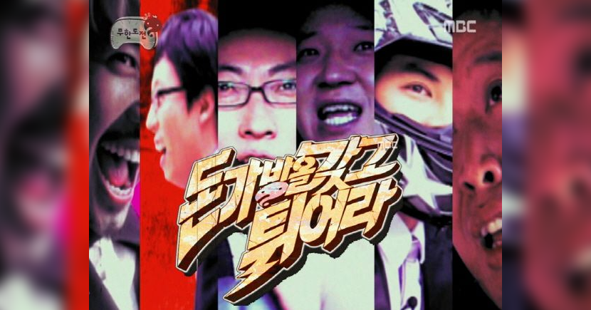
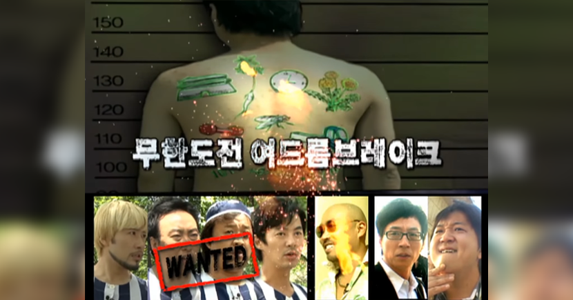
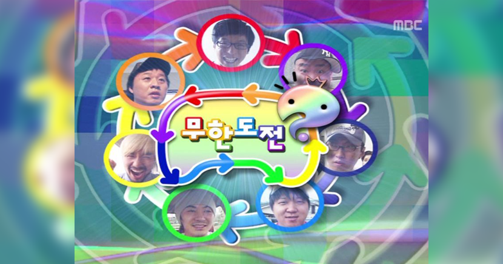
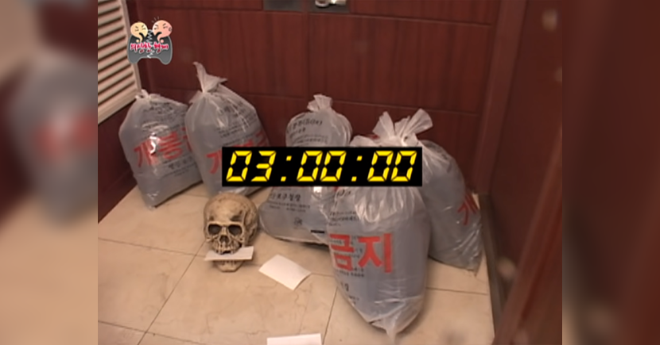
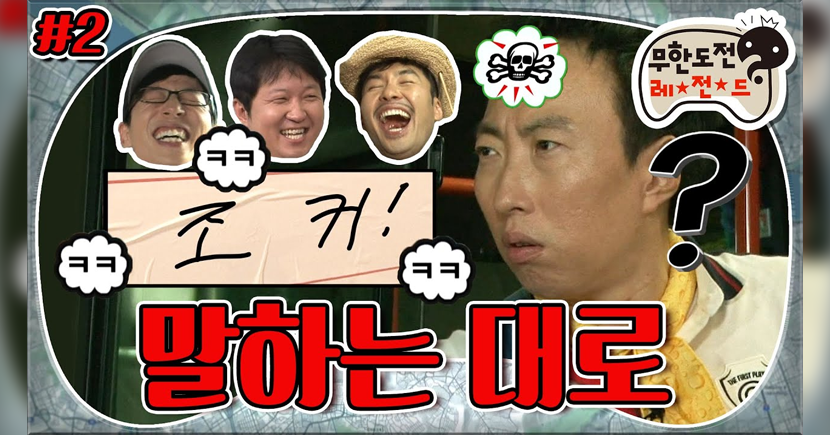

추격전

- 돈가방을 갖고 튀어라
-
2008년 6월 21일, 6월 28일, 7월 5일에 방영된 무한도전 110회~112회 에피소드이다. 사실상 한국 예능 추격전의 기반을 마련한 특집으로, 훗날 런닝맨 같은 다른 예능 프로그램에도 많은 영향을 줬다. 한국 예능 방송에 한획을 그은 셈. 그 인기는 시청자가 뽑은 무한도전 선정 최고의 특집 2위에 선정될 정도.

- 여드름 브레이크
-
2009년 6월 20일과 27일에 방송된 무한도전의 158회/159회의 에피소드이다. 2000년대 후반 큰 인기를 끌었던 미국 드라마 프리즌 브레이크를 패러디한 특집이며, 작 중에서 주인공 마이클 스코필드가 그러했듯 박명수 역시 자신의 여드름 난 등에(...) 보물에 대한 단서를 적어 놓고 그것을 정준하, 노홍철, 전진이 해석한다. 4명(탈옥수)의 목적은 현금 300만 원을 찾는 것이고, 이들을 형사 유재석과 정형돈이 쫓아다니는 술래잡기 형식의 미션. 탈옥수 4명은 시청자 투표에 따라 탈옥수에 어울리는 얼굴들로 선정되었다고 한다.

- 나 잡아봐라
-
무한도전 나 잡아봐라 특집, 일명 꼬리잡기 특집이다 2009년 9월 5일, 9월 12일에 방송된 특집. 무한도전 레전드 추격전 부문에서 1위를 차지한, 무도 최고의 에피소드 중 하나로 평가받는 특집이다. 정식 특집명은 나 잡아봐라 특집이지만, 대중들에게는 꼬리잡기라는 이름으로 많이 알려졌으며 무도리 GO와 무한도전 레전드에서도 ‘꼬리잡기-나 잡아봐라’로 표기되었다. 잡는 순서는 유재석 ← 정준하 ← 노홍철 ← 전진 ← 정형돈 ← 박명수 ← 길 ← 유재석 순으로 진행된다. 게임의 룰은 아주 간단하게 정해진 사람의 꼬리를 잡으면 잡힌 사람이 잡은 사람에게 무조건 복종해야 하는 것 하나다. 최종 우승자와 우승자의 노예가 된 멤버에게는 추석 한우 꼬리 세트가 지급된다.

- 의상한 형제
-
2010년 1월 초, 연초를 맞이하여 서로에게 선물을 나누는 의좋은 형제 특집이 진행되었다. 그러고 얼마 뒤 저녁, 다시 모인 멤버들은 가장 버리고 싶은 물건을 모아 서로에게 선물(?)하게된다. 얼떨 결에 쓰레기를 주게 되어 당황한 멤버들이었지만 이내 미션을 수행하게 된다. 하이라이트로 재석이 찾아가자 하키채로 철벽수비 하는 명수의 모습과 엔딩을 장식한 모든 쓰레기가 준하 집으로 모인 장면이다.

- 말하는 대로
-
멤버들이 탁상에서 러시안 룰렛을 진행하며 시작한다. 서로를 놀리며 웃음을 자아내며 이 게임의 우승자 홍철은 이 후 와이키키 특집과 연결된다. 이 후 한 명씩 출발하여 본 게임이 시작된다. 서로의 버스에 육하원칙에 따라 미션을 만들어 부착하는 룰로 미션 완료시간은 저녁 9시까지. 9시가 되면 7대의 버스들이 여의도 환승센터로 돌아온다. 또한 완성된 문장은 대국민 약속으로 간주하여 반드시 이행하여야 한다. 이 과정에서 치열한 싸움이 이어지고 하이라이트는 명수의 '조커!'사용 장면이다.